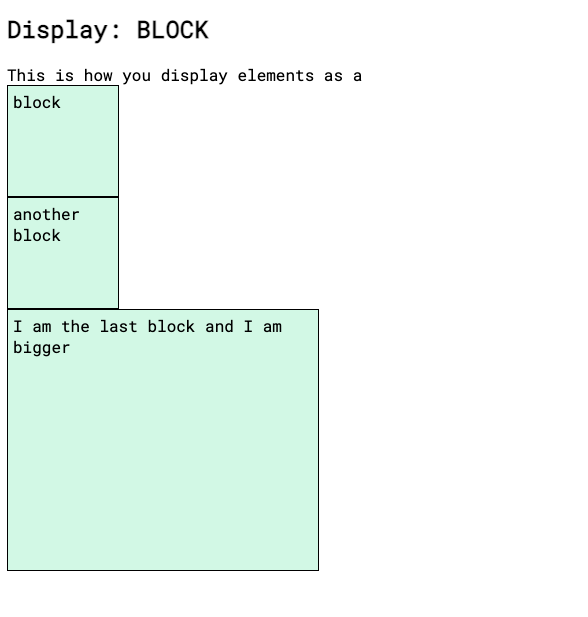

CSS Concepts
What does it mean to display inline vs inline blocks vs block?
The display property is the most important CSS property for controlling layout, as it specifies how an element is displayed.
a. INLINE
The inline property displays an element as an inline element. In other words, inline elements do NOT start on a new line and only takes up as much width as its content. So, if you try to set any width and height, it will have NO effects.

b. INLINE-BLOCK
The inline-block property is essentially the same thing as inline, except that you can set height and width values.
c. BLOCK
With the block property elements are displayed as a block starting on a NEW line and a block element takes up the full width available. And if you wish you can set width and height values.

Resources:
https://www.samanthaming.com/pictorials/css-inline-vs-inlineblock-vs-block/
https://www.w3schools.com/css/css_inline-block.asp
https://www.digitalocean.com/community/tutorials/css-display-inline-vs-inline-block